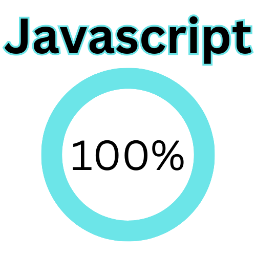
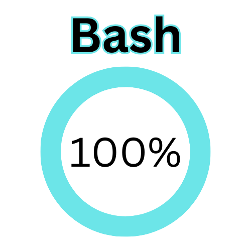
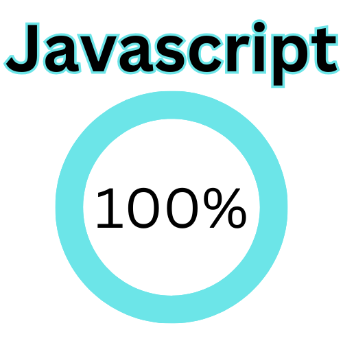
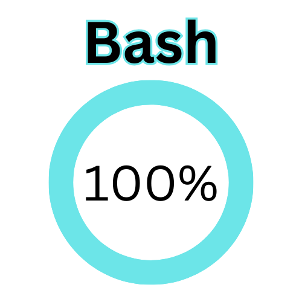

My Name is Robert Calvin — and I'm a designer, developer, and storyteller inspired by color, clarity, and the power of creative connection.
My work lives at the intersection of art and utility. I design with emotion, write with intention, and build with purpose. Whether I’m coding a custom site, designing bold visual branding, or rewriting a resume to tell someone’s story, my goal is the same: help people feel seen, understood, and empowered.
Creativity has always been my outlet — a way to transform ideas into something tangible, expressive, and useful. I find beauty in the abstract, balance in clean design, and meaning in every color, shape, and line. I draw inspiration from people — their stories, their struggles, their vision — and I use that to craft work that doesn’t just “look good,” but makes people feel something.
This isn’t just about websites or resumes or graphics. This is about helping people present their best, most authentic selves to the world — and making sure that world pays attention.
 


